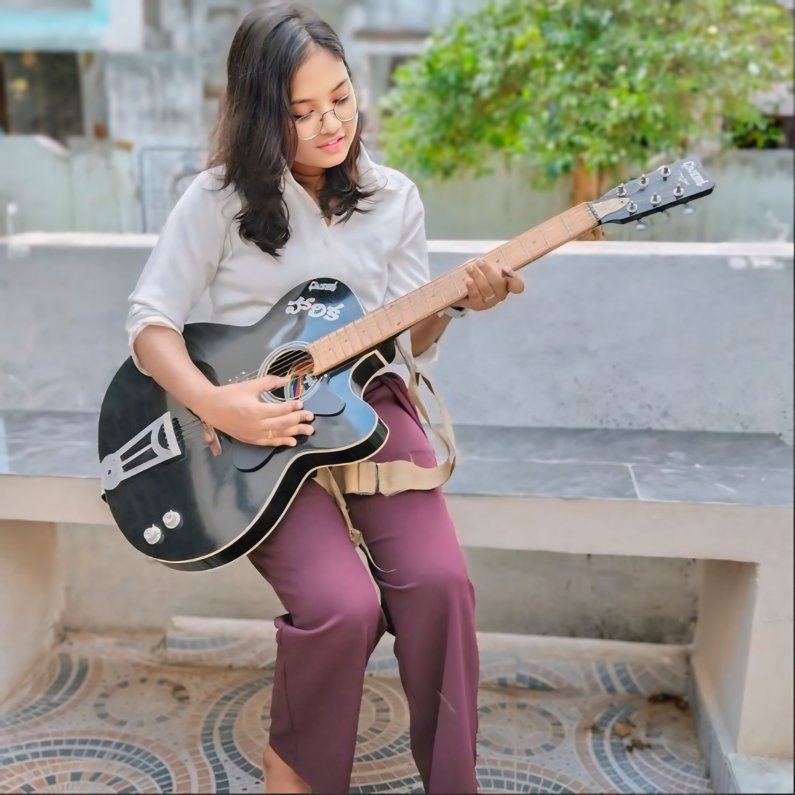
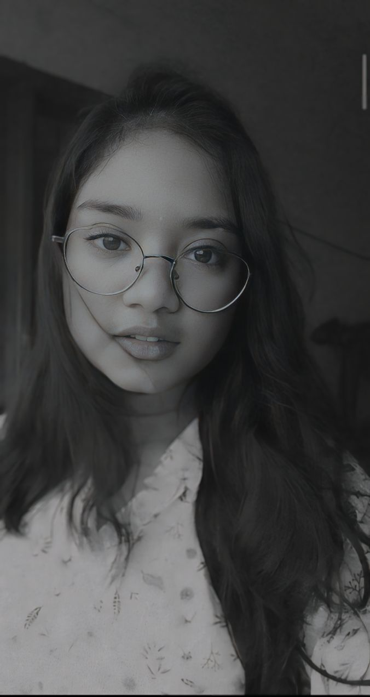
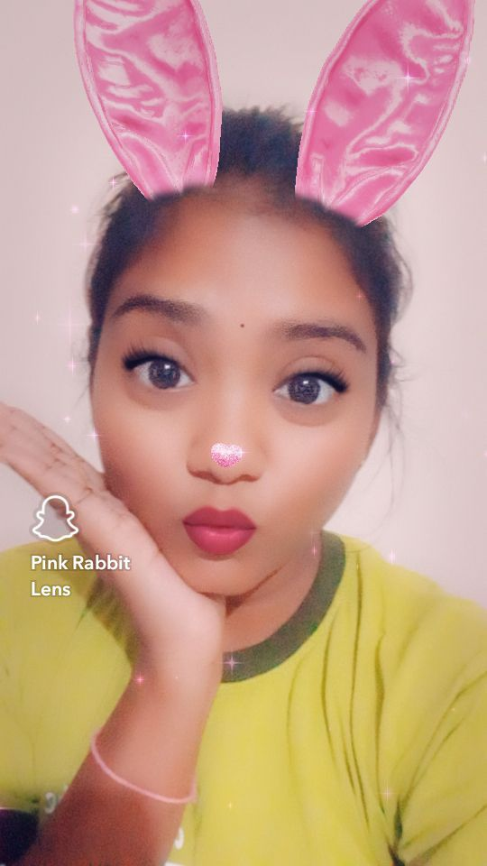

Touch Me
Pranii, your smile is my favorite sight,
and your laughter is the melody
that brightens my day.
You are my heart's greatest joy. 😍
Every challenge we face together
strengthens our bond, Pranii.
Unwavering support makes
the day special and meaningful.
How can someone be
so cute ❤️
In your eyes, Pranii,
I see a future filled with love and laughter.
Your heart is my safe haven,
I always feel cherished. 😍
Your presence is my favorite place to be, Pranii.
Our happiness is my greatest joy,
your love makes every day more beautiful. ❤️
Drag the papers to move!